StoreFront 3.0 and older Config for NetScaler Gateway
Navigation
Contained on this page are the following topics:
- StoreFront Configuration for NetScaler Gateway
- Single FQDN for internal and external
- Multiple Datacenters
- Optimal Gateway
- Gateway in Closest Datacenter
- Multiple Gateways Connecting to One StoreFront
StoreFront Config
- See the NetScaler 10.5 page or NetScaler 11 page for instructions on configuring NetScaler Gateway for StoreFront.
- In the StoreFront Console, click Authentication on the left. On the right, click Add/Remove Methods.
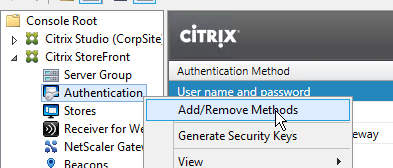
- Check the box next to Pass-through from NetScaler Gateway and click OK.
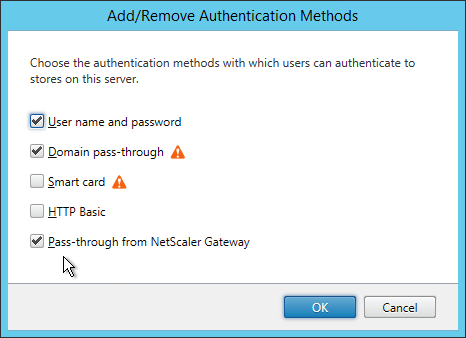
-
If you can’t resolve the NetScaler Gateway FQDN from the StoreFront server, edit the C:\Windows\System32\drivers\etc\hosts file and add an entry for the NetScaler Gateway FQDN.
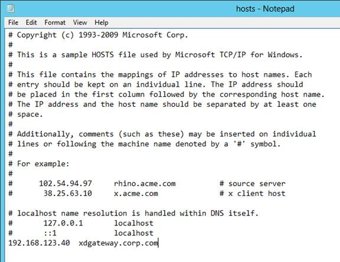
After configuring the HOSTS file, on the StoreFront server, open a browser and navigate to the DNS name. Make sure the Gateway vServer logon page appears.
-
In the StoreFront Console, right-click NetScaler Gateway and click Add NetScaler Gateway Appliance.
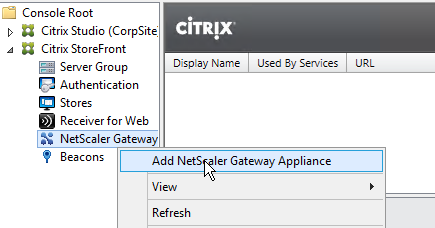
- In the Gateway Settings page, enter a display name. This name appears in Citrix Receiver to make it descriptive. If you have multiple sites, include a geographical name.
- Enter the NetScaler Gateway Public URL. The NetScaler Gateway FQDN must be different than the FQDN used for load balancing of StoreFront (unless you are configuring single FQDN). This can be a GSLB-enabled DNS name.
- A Subnet IP address is not needed for NetScaler Gateway 10 and newer. However, if the NetScaler Gateway URL is GSLB-enabled then you’ll need to enter the VIP of the NetScaler Gateway Virtual Server so StoreFront can differentiate one NetScaler Gateway from another.
- Enter the Callback URL.
- In StoreFront 2.6 and newer, the Callback URL is optional. However, SmartAccess requires the Callback URL to be configured.
- The callback URL must resolve to any NetScaler Gateway VIP on the same appliance that authenticated the user. For multi-datacenter, edit the HOSTS file on the StoreFront server so it resolves to NetScaler appliances in the same datacenter.
- The Callback URL must have a trusted and valid (matches the FQDN) certificate.
- The Callback URL must not have client certificates set to Mandatory.
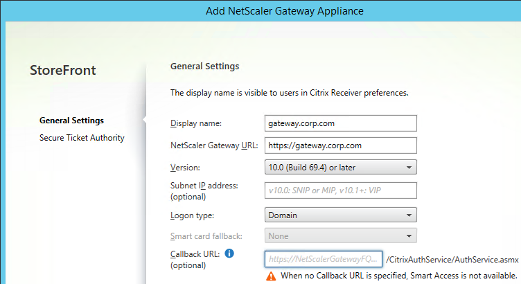
- If you have two-factor authentication (LDAP and RADIUS), change the Logon type to Domain and security token. Otherwise leave it set to Domain only.
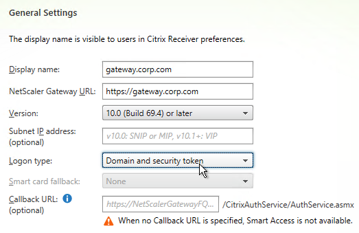
- Click Next.
- In the Secure Ticket Authority page, click Add.
- Add both of your Controllers. Use http:// or https:// depending on the certificates installed on the Controllers. You can also enter a Load Balancing VIP here. However, you cannot use a Load Balancing VIP when configuring Secure Ticket Authorities on your NetScaler Gateway Virtual Server.
- Click Create when done.
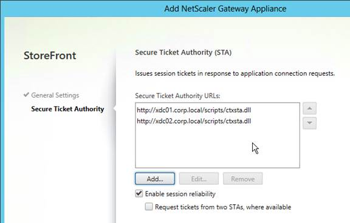
- Then click Finish.
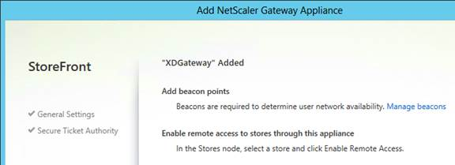
- Click Stores on the left. On the right, click Enable Remote Access.
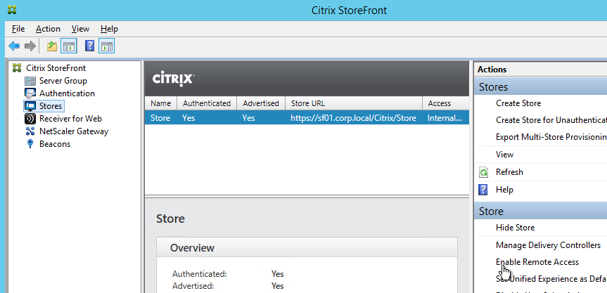
- Select No VPN tunnel.
- Note: if you want Receiver to automatically launch a VPN tunnel, then see CTX200664 How to Configure Receiver for Seamless Experience Through NetScaler Gateway. :idea:
- Check the box next to the NetScaler Gateway object you just created and then click OK.
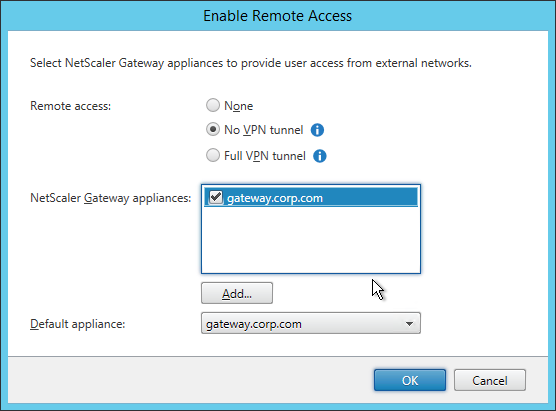
- Then in the StoreFront console, right-click Server Group and click Propagate Changes.
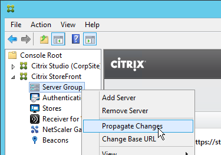
Single FQDN
Docs.citrix.com - Create a single Fully Qualified Domain Name (FQDN) to access a store internally and externally
Traditionally Receiver required separate FQDNs for StoreFront Load Balancing (internal) and NetScaler Gateway (external). Recently Citrix made some code changes to accept a single FQDN for both. This assumes that external users resolve the single FQDN to NetScaler Gateway and internal users resolve the same FQDN to StoreFront Load Balancing.
Single FQDN is fairly new and thus has the following requirements:
- Receiver for Windows 4.2 or newer
- Receiver for Mac 11.9 or newer
- StoreFront 2.6 or newer
- Split DNS – different DNS resolution for internal vs external
- NetScaler 10.1 or newer
This section assumes NetScaler Gateway is in ICA Proxy mode. Different instructions are needed for when ICA Proxy is off. See docs.citrix.com for more information.
If you don’t care about email-based discovery then the configuration of Single FQDN is fairly simple. Sample DNS names are used below. Make sure the certificates match the DNS names.
- Internal DNS name = the Single FQDN (e.g. storefront.corp.com). Resolves to internal Load Balancing VIP for StoreFront. Set the StoreFront Base URL to this address.
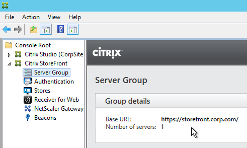
- External DNS name = the Single FQDN (e.g. storefront.corp.com). Resolves to public IP, which is NAT’d to NetScaler Gateway VIP on DMZ NetScaler. Set the NetScaler Gateway object in StoreFront to this FQDN.
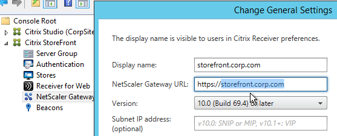
- Auth Callback = any internal DNS name (e.g. storefrontcb.corp.com) that resolves to a NetScaler Gateway VIP on the same DMZ NetScaler appliance that authenticated the user.
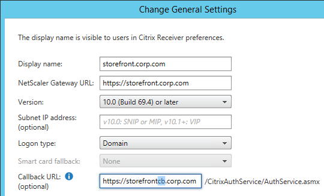
- Auth callback is optional if you don’t need SmartAccess features.
- The callback DNS name must be different than the Single FQDN.
- Your external NetScaler Gateway certificate could match both the Single FQDN and the Callback FQDN. Or you can create separate NetScaler Gateway Virtual Servers on the same appliance with separate certificates that match these FQDNs.
- Internal Beacon = any internal website URL that is not externally accessible. You can’t use the Single FQDN as the Internal Beacon. Ideally, the Internal Beacon should be a new DNS name that resolves to the StoreFront Load Balancing VIP. However, this requires the StoreFront Load Balancing Virtual Server to have a certificate that matches both the Single FQDN and the Internal Beacon. See CTX218708 How to Configure Internal Beacon for Single FQDN on StoreFront. :idea:
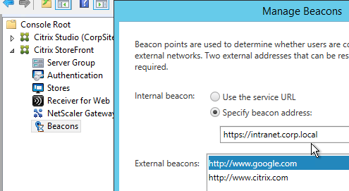
- If are using Receiver for iOS internally then be aware that Receiver for iOS handles the Internal Beacon differently than Receiver for Windows. Receiver for iOS will append /Citrix/Store/discovery to the Internal Beacon and thus it only works if the Internal Beacon DNS name resolves to the StoreFront server. Since you can't use the StoreFront Base URL as the Internal Beacon you'll need a different DNS name that resolves to the StoreFront servers and matches the StoreFront certificate. Note: if you are not allowing internal iOS devices then this isn't needed.
- Make sure the DMZ NetScaler resolves the Single FQDN to the internal StoreFront Load Balancing VIP. You typically add internal DNS servers to the NetScaler. Or you can create a local address record for the Single FQDN.
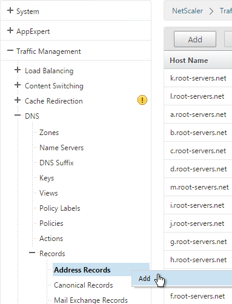
- In the NetScaler Gateway Session Profile, set the Web Interface Address and the Account Services Address to the Single FQDN.
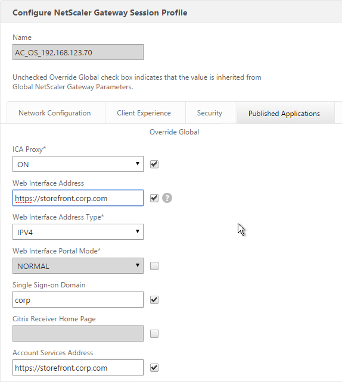
If you need email-based discovery then here’s an example configuration for ICA Proxy NetScaler Gateway:
- External DNS:
- Storefront.corp.com resolves to public IP, which is NAT’d to NetScaler Gateway VIP on DMZ NetScaler.
- If email-based discovery, SRV record for _citrixreceiver._tcp.email.suffix points to StoreFront.corp.com.
- External publicly-signed certificate for NetScaler Gateway:
- One option is wildcard for *.corp.com. Assumes email suffix is also corp.com.
- Another option is the following Subject Alternative Names:
- Storefront.corp.com
- StorefrontCB.corp.com – for callback URL. Only accessed from internal.
- Or you can create a separate Gateway vServer for callback with a separate certificate.
- If email-based discovery, discoverReceiver.email.suffix
- Internal DNS:
- Storefront.corp.com resolves to Load Balancing VIP for StoreFront
- StoreFrontCB.corp.com – resolves to NetScaler Gateway VIP on DMZ NetScaler. For authentication callback.
- For the internal beacon, FQDN of any internal web server. Make sure this name is not resolvable externally.
- If email-based discovery, SRV record for _citrixreceiver._tcp.email.suffix points to StoreFront.corp.com.
- Internal certificate for StoreFront Load Balancing: publicly-signed recommended, especially for mobile devices and thin clients. Also can use the external certificate.
- One option is wildcard for *.corp.com. Assumes email suffix is also corp.com.
- Another option is the following Subject Alternative Names:
- Storefront.corp.com
- If email-based discovery, discoverReceiver.email.suffix
StoreFront Configuration:
- Base URL = https://storefront.corp.com
- Internal beacon = FQDN of internal web server. Make sure it’s not resolvable externally.
- Gateway object:
- Gateway URL = https://storefront.corp.com
- Callback URL = https://storefrontcb.corp.com
Receiver for Web session policy (basic mode or ICA Only is checked):
- Policy expression = REQ.HTTP.HEADER User-Agent NOTCONTAINS CitrixReceiver
- Client Experience tab:
- Home page = https://storefront.corp.com/Citrix/StoreWeb
- Session Timeout = 60 minutes
- Clientless Access = Off
- Clientless Access URL Encoding = Clear
- Clientless Access Persistent Cookie = Deny
- Plug-in Type = Windows/Mac OS X
- Single Sign-on to Web Applications = checked
- Security tab:
- Default authorization = ALLOW
- Published Applications tab:
- ICA Proxy = On
- Web Interface address = https://storefront.corp.com/Citrix/StoreWeb
- Web Interface Portal Mode = Normal
- Single Sign-on Domain = Corp
Receiver Self-Service session policy (basic mode or ICA Only is checked):
-
-
- Policy expression = REQ.HTTP.HEADER User-Agent CONTAINS CitrixReceiver - Client Experience tab: - Session Timeout = 60 minutes - Clientless Access = Off - Clientless Access URL Encoding = Clear - Clientless Access Persistent Cookie = Deny - Plug-in Type = Java - Security tab: - Default authorization = ALLOW - Published Applications tab: - ICA Proxy = On - Web Interface address = https://storefront.corp.com - Web Interface Portal Mode = Normal - Single Sign-on Domain = Corp - Account Services address = https://storefront.corp.com
-
Multiple Datacenters / Farms
If you have StoreFront (and NetScaler Gateway) in multiple datacenters, GSLB is typically used for the initial user connection but GSLB doesn’t provide much control over which datacenter a user initially reaches. So the ultimate datacenter routing logic must be performed by StoreFront. Once the user is connected to StoreFront in any datacenter, StoreFront looks up the user’s Active Directory group membership and gives the user icons from multiple farms in multiple datacenters and can aggregate identical icons based on farm priority order. When the user clicks on one of the icons, Optimal Gateway directs the ICA connection through the NetScaler Gateway that is closest to the destination VDA. Optimal Gateway requires datacenter-specific DNS names for NetScaler Gateway.
Docs.citrix.com Set up highly available multi-site store configurations explains configuring XML files on StoreFront to aggregate identical icons from multiple farms/sites. Identical Icons are aggregated in farm priority order or load balanced across multiple farms. To specify a user’s “home” datacenter, configure different farm priority orders for different Active Directory user groups.
Shaun Ritchie Citrix StoreFront High Availability and Aggregation – A dual site Active Active design has a sample multi-site configuration using XML Notepad and explains how to use the Primary and Secondary keywords to override farm priority order.
Citrix Blogs StoreFront Multi-Site Settings: Some Examples has example XML configurations for various multi-datacenter Load Balancing and failover scenarios.
When Citrix Receiver switches between StoreFront servers in multiple datacenters, it’s possible for each datacenter to be treated as a separate Receiver site. This can be prevented by doing the following. From Juan Zevallos at Citrix Discussions: To have multiple StoreFront deployments across a GSLB deployment, here are the StoreFront requirements:
- Match the SRID - in StoreFront, if you use the same BaseURL in the 2 separate installations, then the SRID should end up being identical. If the BaseURL is changed after the initial setup, the SRID doesn't change. The SRID can be safely edited in the \inetpub\wwwroot\Citrix\Roaming\web.config file. It will be replicated into the discovery servicerecord entry in the Store web.config which can be edited as well or refreshed from the admin console by going into Remote Access setup for the store and hitting OK. Make sure to propagate changes to other servers in the group.
- Match the BaseURL
- Match the Delivery Controller names under "Manage Delivery Controllers" - The XML brokers can be different, but the actual name of the Delivery Controller/Farm must be identical. Here's the exact setting I'm referring to: https://citrix.sharefile.com/d/sa562ba140be4462b
If you are running XenApp / XenDesktop in multiple datacenters, you must design roaming profiles and home directories correctly.
Optimal Gateway
The Optimal Gateway feature lets you override the NetScaler Gateway used for ICA connections. Here are some scenarios where this would be useful:
- The NetScaler Gateway Virtual Server requires user certificates. If ICA traffic goes through this Virtual Server then each application launch will result in a certificate prompt. Use Optimal Gateway to force ICA connections through a different NetScaler Gateway Virtual Server that doesn’t have certificate authentication enabled. Note: Callback URL also cannot use a NetScaler Gateway Virtual Server where client certificates are set to Mandatory.
- Multi-site Load Balancing. If the icon selected by the user is published from XenApp/XenDesktop in Datacenter A, then you probably want the ICA connection to go through a NetScaler Gateway Virtual Server in Datacenter A. This requires separate NetScaler Gateway DNS names for each datacenter. Also, Optimal Gateway is applied at the farm/site level so if you are stretching a farm across datacenters then Optimal Gateway won’t help you.
- NetScaler Gateway for internal connections (AppFlow). If you want to force internal users to go through NetScaler Gateway so AppFlow data can be sent to Citrix Insight Center then you can do that using Optimal Gateway even if the user originally connected directly to the StoreFront server. See How to Force Connections through NetScaler Gateway Using Optimal Gateways Feature of StoreFront for more information.
Optimal Gateway is configured by editing the StoreFront Store’s web.config file. See Docs.citrix.com: To configure optimal NetScaler Gateway routing for a store. For an example configuration see Docs.citrix.com: Examples of highly available multi-site store configurations.
Optimal Gateway works great if you have separate XenDesktop sites/farms in each datacenter. However, for those of you with a central XenDesktop site running globally dispersed VDAs and a NetScaler Gateway in each location, or a single globally distributed XenApp farm (which I know an awful lot of you still have), see the Citrix blog post – How to direct remote XenApp/XenDesktop users based on active directory group membership:
-
- On a Load Balancing NetScaler, create multiple StoreFront load balancers. Each has a unique Net Profile with a unique SNIP.
- On StoreFront, create multiple Gateway objects, each with a SNIP that matches the Net Profiles created on the load balancer. Each Gateway object has a datacenter-specific Gateway FQDN.
- On each NetScaler Gateway:
- Configuration LDAP group extraction.
- Create a session policy for each datacenter pointing to the one of the StoreFront Load Balancers.
- Create AAA groups and bind the session policies.
Gateway in Closest Datacenter
Citrix Blog post ‘Accurately’ Direct XenApp/XenDesktop Users to a Correct Location Based Datacenter:
- An unsupported extension to StoreFront
- Read’s the client’s IP and looks it up in a location database (GeoLite2) to determine the user’s closest datacenter
- Adjusts the Gateway FQDN in the rendered .ica file to direct users to the closest datacenter.
- Requires datacenter-specific or region-specific Gateway DNS names.
- Every NetScaler Gateway should know about every potential Secure Ticket Authority server.
Multiple Gateways to One StoreFront
If you have multiple NetScaler Gateways connecting to one StoreFront Server Group, and if each of the NetScaler Gateways uses the same DNS name (GSLB), then you will need some other method of distinguishing one appliance from the other so the callback goes to the correct appliance.
- In the StoreFront console, create multiple NetScaler Gateway appliances, one for each datacenter. Give each of them unique names.
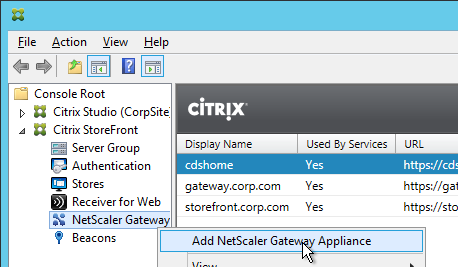
- Enter the same NetScaler Gateway URL in all of the gateway appliances. Since all of the appliances use the same DNS name, you cannot use the DNS name to distinguish them.
- Each appliance has a different NetScaler Gateway VIP. This VIP can be entered in the Subnet IP field. StoreFront will use this VIP to distinguish one appliance from another. The field label is SNIP but we actually need to enter a VIP.
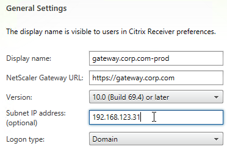
- The callback URL must be unique for each Gateway appliance. The callback URL must resolve to a NetScaler Gateway VIP on the same appliance that authenticated the user. Create new datacenter-specific DNS names. For example: gateway-prod.corp.com and gateway-dr.corp.com.
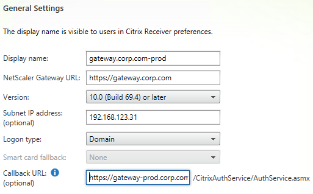
- The datacenter-specific DNS name must match the certificate on the NetScaler Gateway Virtual Server. Here are some options to handle the certificate requirement:
- On the main NetScaler Gateway Virtual Server, assign a wildcard certificate that matches both the GSLB name and the datacenter-specific name.
- On the main NetScaler Gateway Virtual Server, assign an SSL certificate with Subject Alternative Names for both the GSLB name and the datacenter-specific name.
- Create an additional NetScaler Gateway Virtual Server on the appliance. Bind a certificate that matches the datacenter-specific name.
- Configure name resolution for the datacenter-specific NetScaler Gateway DNS names. Either edit the HOSTS file on the StoreFront servers or add DNS records to your DNS servers.
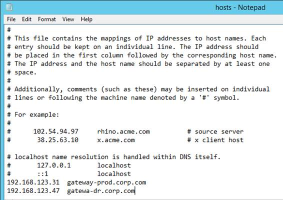
- When enabling Remote Access on the store, select both Gateway appliances. Select one as the default appliance.
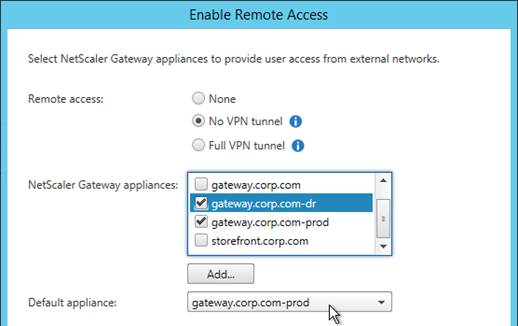